Obligatorio de Programación 3
Facultad de Ingeniería, Universidad ORT Uruguay
Grupo: {{grupo}}
Noviembre de 2026
El sistema permite publicar y leer historias interactivas, en las que cada lector elige cómo sigue la trama hasta llegar a uno de los finales posibles. Está formado por dos soluciones independientes que comparten las bibliotecas de clases:
| Solución | Proyectos | Función |
|---|---|---|
Administracion.slnx | Obligatorio, Dominio, Aplicacion, Infraestructura | Aplicación MVC de administración: usuarios, historias, capítulos y auditoría. |
Lectura.slnx | Obligatorio.WebApi, Obligatorio.Lector, Dominio, Aplicacion, Infraestructura | Web API con JWT y su cliente MVC: lectura, historial, métricas y estilo. |
| Administración (Somee) | {{url_administracion}} |
|---|---|
| Lectura (Somee) | {{url_lectura}} |
| Web API y Swagger (Somee) | {{url_api}} |
| Repositorio en GitHub | {{url_github}} |
La sección de documentación de la consigna cita algunos requerimientos con otro número (por ejemplo, RF06 para Lectura de historia). En este informe se usa la numeración de la descripción de los requerimientos: RF07 Lectura, RF08 Historial, RF09 Ranking de historias y RF12 Estilos.
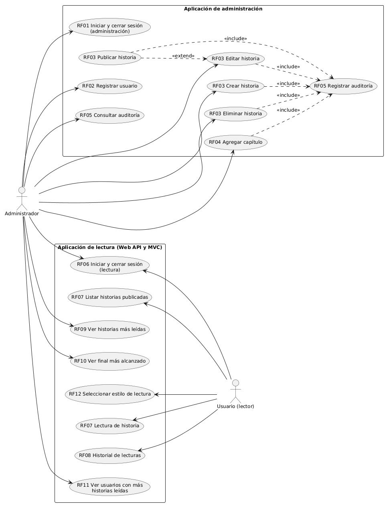
| Actor principal | Usuario con rol lector. |
|---|---|
| Objetivo | Recorrer una historia publicada eligiendo opciones hasta llegar a un final, que queda registrado. |
| Precondiciones | El usuario inició sesión y existe al menos una historia publicada. |
| Poscondiciones | Queda registrada una lectura con su capítulo actual. Si se llegó a un final, también quedan la fecha de finalización y el final alcanzado. |
| Paso | Usuario | Sistema |
|---|---|---|
| 1 | Ingresa a Historias. | Muestra las historias publicadas y las categorías para filtrar. |
| 2 | Opcionalmente, elige una categoría y filtra. | Muestra solo las historias publicadas de esa categoría. |
| 3 | Elige Comenzar lectura en una historia. | Crea una lectura nueva, ubicada en el capítulo inicial, con la fecha actual. |
| 4 | Muestra el título y el texto del capítulo, y sus opciones. | |
| 5 | Elige una opción. | Comprueba que pertenezca al capítulo actual y avanza al capítulo de destino. |
| 6 | Si el destino es intermedio, vuelve al paso 4. | |
| 7 | Si el destino es un final, registra la fecha de finalización y el final alcanzado, y muestra el capítulo final con la opción de iniciar una nueva lectura. |
| Paso | Condición | Respuesta del sistema |
|---|---|---|
| 1a | No hay historias para el filtro elegido. | Informa: «No hay historias publicadas para mostrar con ese filtro.» |
| 3a | La historia no existe. | Informa: «La historia no existe.» La API responde 404. |
| 3b | La historia dejó de estar publicada. | Informa: «Solo se pueden leer historias publicadas.» La API responde 400. |
| 4a | La lectura no existe o es de otro usuario. | Informa: «La lectura no existe o no pertenece al usuario.» La API responde 404. |
| 5a | La opción no pertenece al capítulo actual. | Informa: «La opción seleccionada no pertenece al capítulo actual.» La API responde 400. |
| 5b | La lectura ya había finalizado. | Informa: «La lectura ya finalizó. Debe iniciar una nueva.» La API responde 400. |
| 7a | El usuario quiere probar otro camino. | Elige Iniciar una nueva lectura y vuelve al paso 3. La lectura anterior no cambia. |
| *a | La sesión venció o el token no es válido. | La API responde 401 y la aplicación vuelve al inicio de sesión. |
| *b | Un administrador intenta leer. | La API responde 403 y la aplicación informa que no tiene permisos. |
| *c | La API no está disponible. | Informa: «No se pudo conectar con la API.» |
| Actor principal | Usuario con rol lector. |
|---|---|
| Objetivo | Consultar las lecturas propias iniciadas en un mes y año, con su estado y el final alcanzado. |
| Precondiciones | El usuario inició sesión. |
| Poscondiciones | No se modifica ningún dato. |
| Paso | Usuario | Sistema |
|---|---|---|
| 1 | Ingresa a Mi historial. | Selecciona el mes y el año actuales, y muestra las lecturas de ese período. |
| 2 | Elige otro mes y año, y busca. | Busca solo las lecturas de ese usuario iniciadas en ese período. |
| 3 | Muestra, de la más reciente a la más antigua: historia, fecha de inicio, estado, fecha de finalización y final alcanzado. | |
| 4 | Opcionalmente, elige Continuar en una lectura en curso. | Muestra el capítulo donde había quedado (continúa en el caso de uso Lectura de historia, paso 4). |
| Paso | Condición | Respuesta del sistema |
|---|---|---|
| 2a | No hay lecturas en el período. | Informa: «No existen lecturas para el mes y año seleccionados.» La API responde 200 con una lista vacía. |
| 2b | El mes no está entre 1 y 12. | Informa: «El mes debe estar entre 1 y 12.» La API responde 400. |
| 2c | El año no es válido. | Informa: «El año ingresado no es válido.» La API responde 400. |
| *a | La sesión venció o el token no es válido. | La API responde 401 y la aplicación vuelve al inicio de sesión. |
| *b | Un administrador intenta consultar. | La API responde 403 y la aplicación informa que no tiene permisos. |
Requerimiento: listado de historias ordenado por cantidad de lecturas completadas, de mayor a menor, sin las historias nunca leídas. Solo para administradores. Se usa diseño de caja negra, con clases de equivalencia sobre el estado de las lecturas y valores límite sobre la cantidad.
Se prueba con GET /api/Metricas/ranking-historias y con la pantalla Historias más leídas de la aplicación de lectura. Estos casos se ejecutaron de forma automatizada contra la aplicación en funcionamiento y dieron el resultado esperado.
| Condición | Clases válidas: la historia aparece | Clases inválidas: la historia no aparece |
|---|---|---|
| Lecturas de la historia | C1: al menos una completada. | C2: ninguna lectura. C3: solo lecturas en curso. |
| Rol del solicitante | C4: administrador. | C5: lector (403). C6: sin autenticar (401). |
| Id | Caso | Datos de entrada | Resultado esperado |
|---|---|---|---|
| CP01 | Sin lecturas completadas | Base con historias publicadas y ninguna lectura. | API: 200 y lista vacía. Pantalla: «Todavía no hay lecturas completadas.» |
| CP02 | Historia nunca leída (C2) | Delta sin lecturas y Alfa con 1 completada. | Aparece solo Alfa. |
| CP03 | Solo lecturas en curso (C3) | Gama con 1 lectura sin terminar y Alfa con 1 completada. | Gama no aparece. |
| CP04 | Mínimo: una completada (C1) | Alfa con exactamente 1 completada. | Alfa aparece con cantidad 1. |
| CP05 | Orden descendente | Alfa con 4 y Beta con 2. | Alfa, Beta. |
| CP06 | Empate | Beta con 2 y Epsilon con 2. | Ambas con 2, ordenadas alfabéticamente: Beta, Epsilon. |
| CP07 | Completadas y en curso juntas | Alfa con 4 completadas y 1 en curso. | Alfa aparece con cantidad 4. |
| CP08 | El mismo usuario repite | Un usuario completa Alfa 2 veces. | Cuentan las 2 lecturas: se cuentan lecturas, no usuarios. |
| CP09 | Se actualiza con el uso | Ranking vacío; un lector completa una historia. | La historia pasa a aparecer con cantidad 1. |
| CP10 | Solicitante lector (C5) | GET con token de lector. | 403. La pantalla informa que no tiene permisos. |
| CP11 | Sin autenticar (C6) | GET sin token. | 401. La pantalla lleva al inicio de sesión. |
Los diagramas se hicieron con PlantUML online y se incluyen como capturas de pantalla. Los atributos y operaciones se generan leyendo el código, por lo que coinciden con lo implementado. Se incluye completa la lógica de negocio (Dominio y Aplicación) y, para las demás capas, las clases que participan en Lectura de historia, sin las vistas MVC.
Respecto al diseño de las pre-entregas, las veces que se alcanzó un final ya no se guardan en CapituloFinal: se cuentan desde las lecturas, para no mantener el mismo dato en dos lugares.
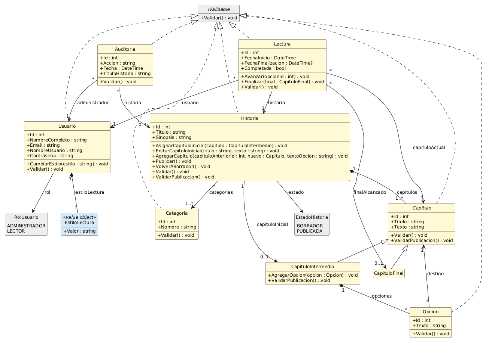
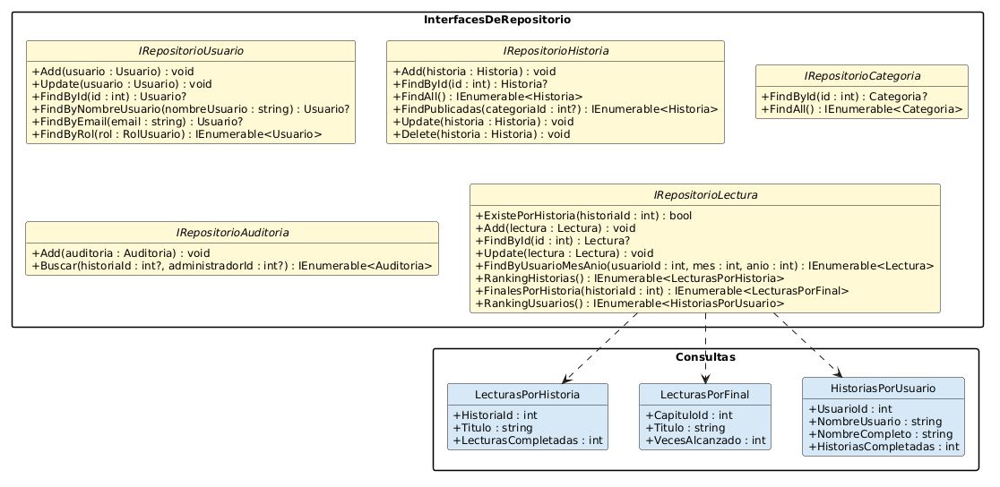
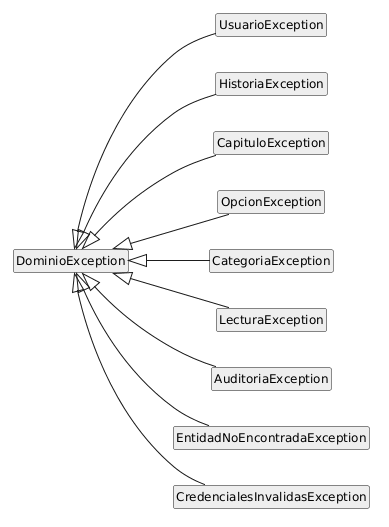
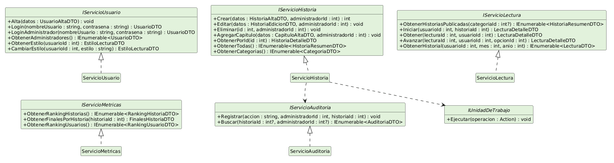
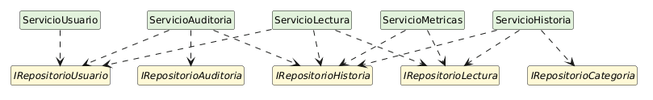
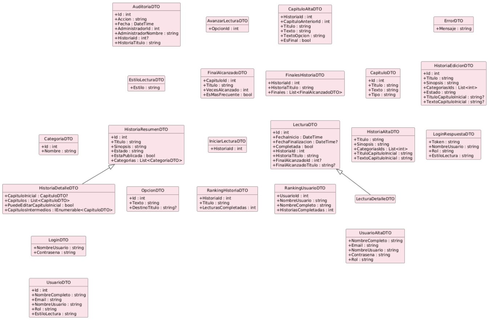
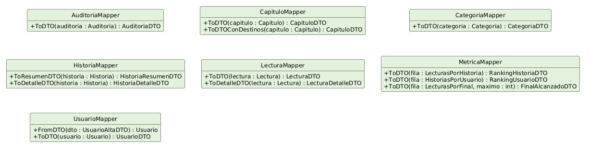
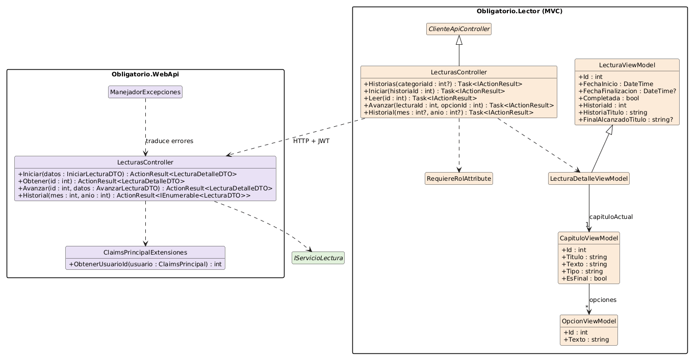
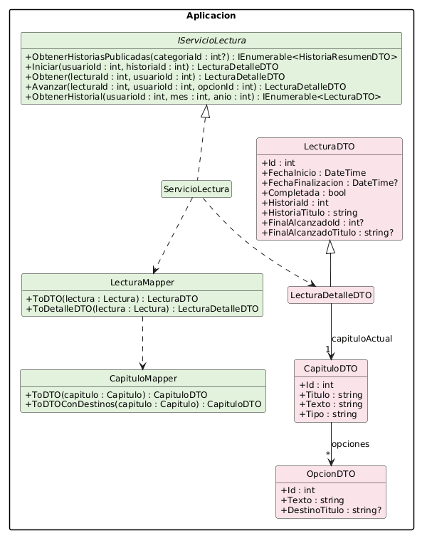
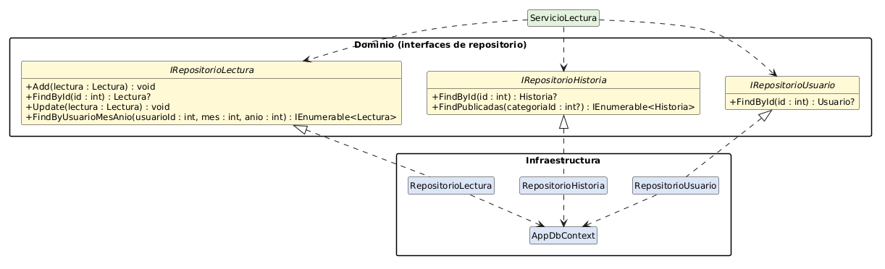
Las historias, capítulos, opciones y finales de la precarga, junto con los usuarios y las lecturas de prueba, se generaron con ayuda de IA generativa.
| Herramienta y modelo | {{ia_herramienta}} |
|---|---|
| Secuencia de prompts | {{ia_link}} |
La IA devuelve dos archivos JSON. BaseDeDatos/generador/generar_script.py los valida y arma BaseDeDatos/Obligatorio.sql, que contiene el esquema y los inserts. En ese script, los comentarios separan la precarga generada con IA de los datos que surgen del uso. Los Id los genera la base de datos: cada Id nuevo se guarda con SCOPE_IDENTITY() y se reutiliza en las claves foráneas.